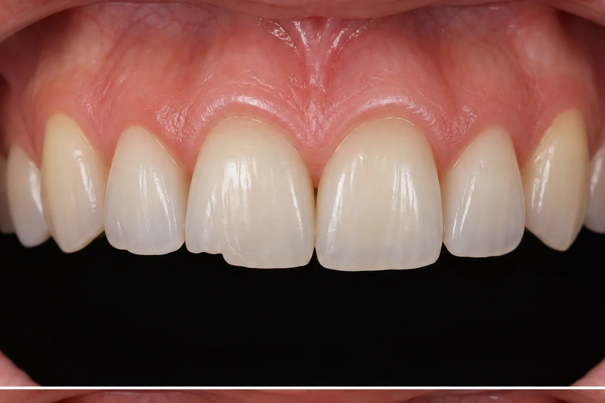
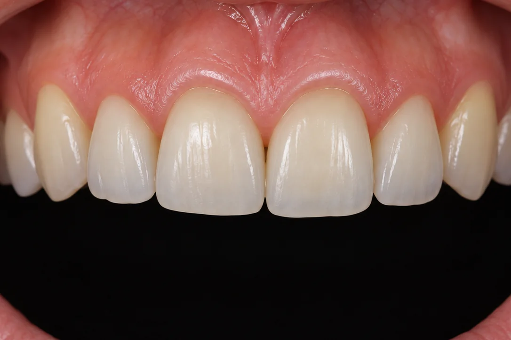

치아의 형태와 색을 직접 보고,
필요한 부분만 섬세하게 다듬는 심미레진.
필요한 범위를 먼저 판단하고, 형태는 직접 만들고 다듬습니다.
치료 전 구강 상태를 확인해 준비하고, 치료 후 관리 방법을 안내합니다.
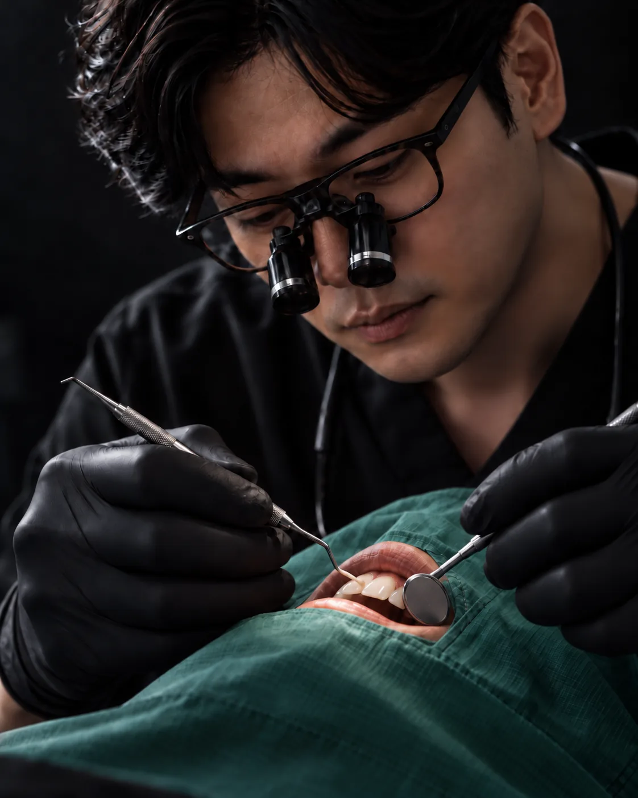
같은 레진을 사용해도 치아의 형태와 비율, 주변 치아와의 연결을 어떻게 읽고 다듬느냐에 따라 결과는 달라집니다.
BLOOM은 필요한 범위를 먼저 판단하고, 원장이 직접 형태를 만들고 조정합니다.
자연치는 한 가지 색으로 보이지 않습니다. 치아의 위치에 따라 밝기와 색, 투명도가 다르기 때문에 필요한 경우 서로 다른 색조와 투명도의 레진을 단계적으로 쌓아 주변 치아와 자연스럽게 이어지도록 만듭니다.
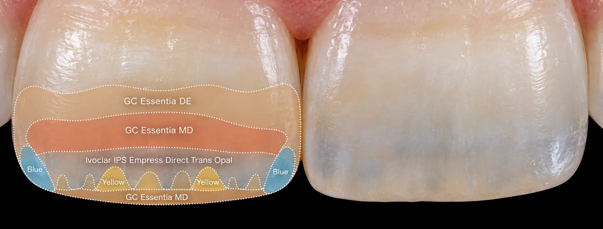
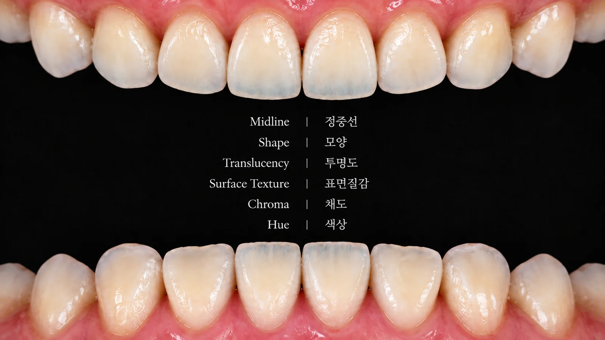
형태를 만든 뒤에는 표면의 굴곡과 질감을 다듬고 단계적으로 연마해 주변 치아와 어울리는 광택을 만듭니다.
너무 매끈하거나 과하게 반짝이지 않도록 자연치의 표면과 빛의 반사를 함께 봅니다.
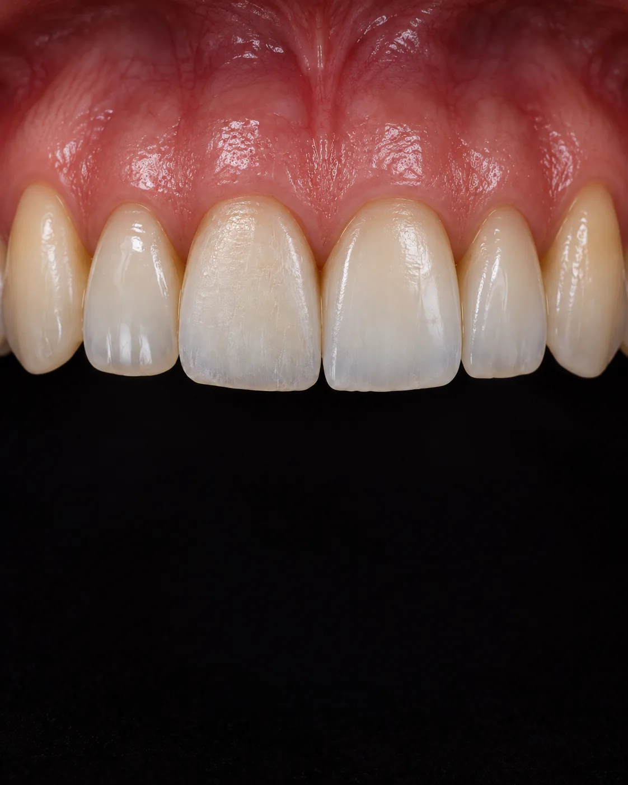
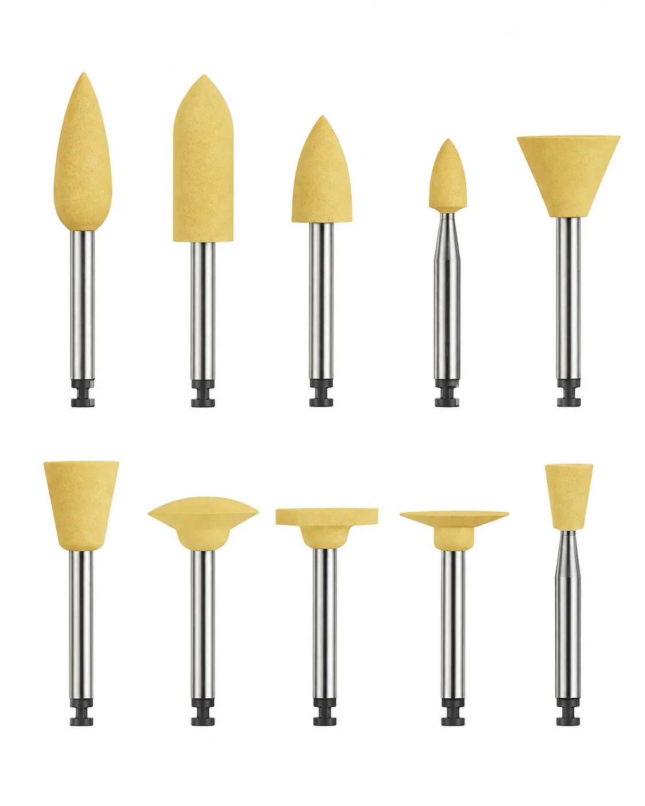
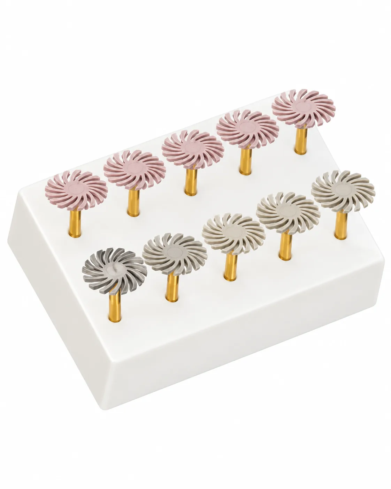
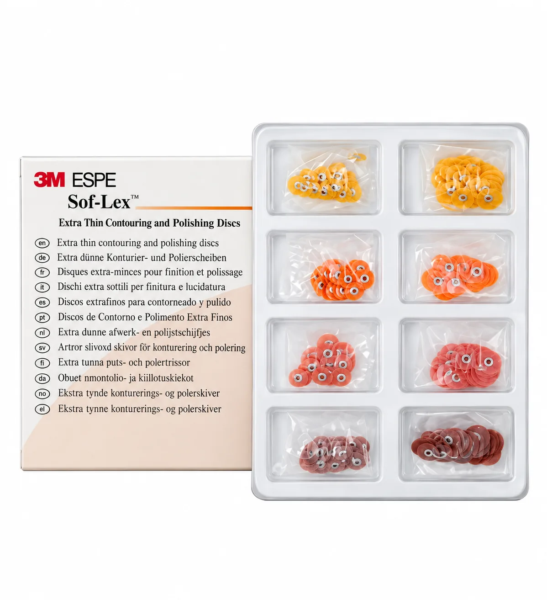
치료 전에는 잇몸과 주변 치아 상태를 확인하고, 치료 후에는 레진의 경계와 교합, 표면 상태를 함께 확인합니다.
오래 유지할 수 있도록 필요한 관리 방법도 안내합니다.
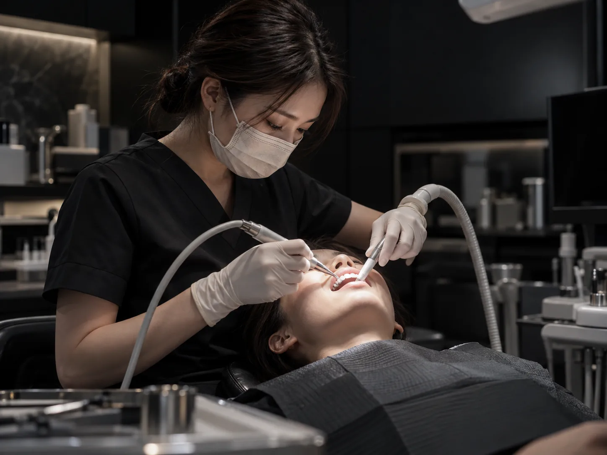
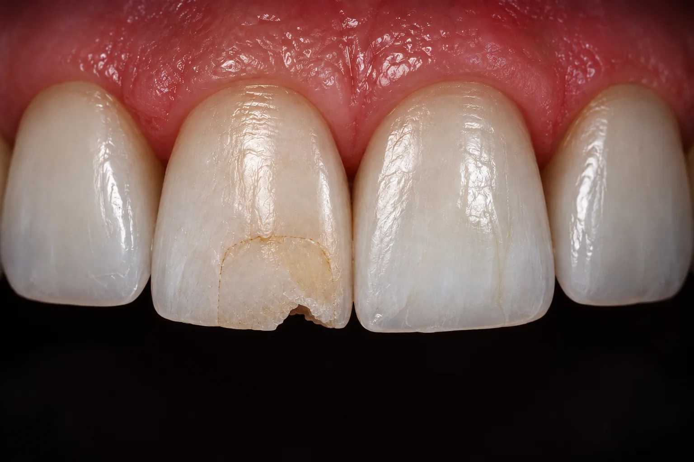
기존 레진의 색과 경계, 형태, 파절 여부와 주변 치아 상태를 먼저 확인합니다.
상태에 따라 전체를 제거하기보다 필요한 범위만 보완할 수 있는지도 함께 판단합니다.


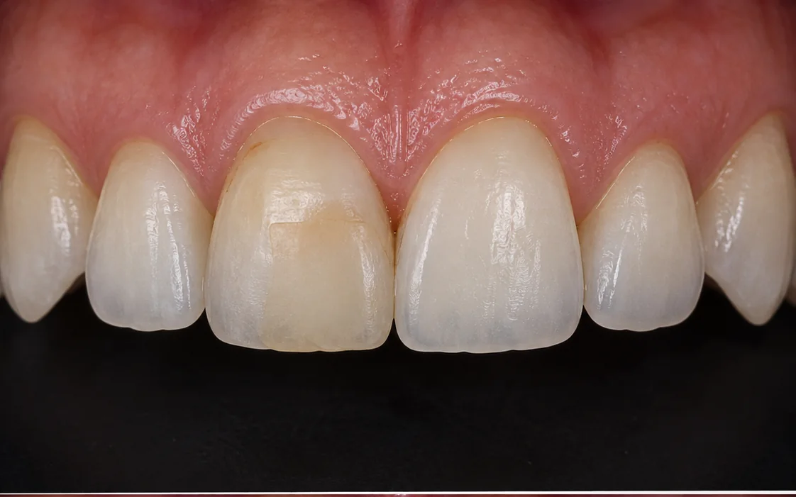
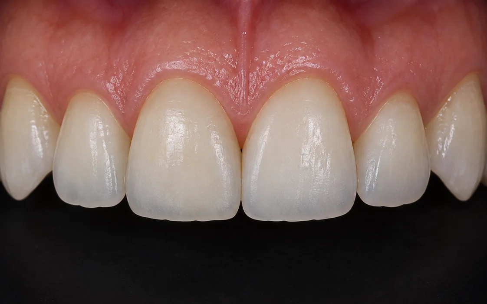
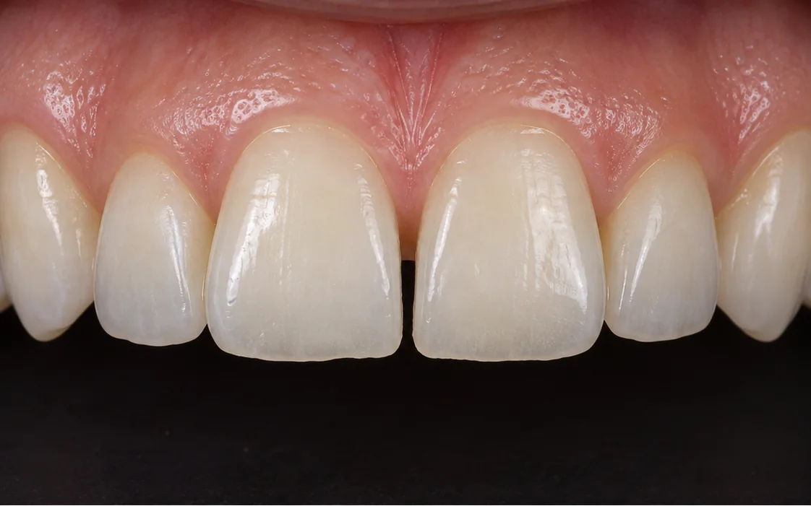
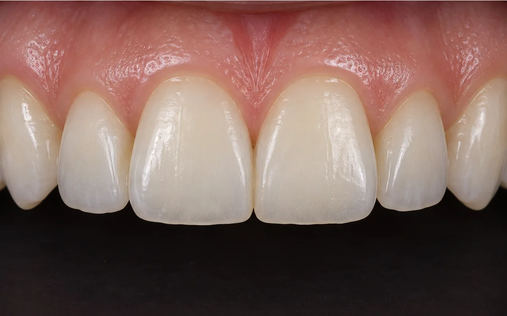
※ 실제 치료 사례이며 동의를 받아 게재했습니다. 치료 결과는 개인에 따라 다를 수 있고, 시린 증상·잇몸 염증 등의 부작용이 생길 수 있습니다.

모든 치료는 개인의 구강 상태에 따라 결과와 치료 기간이 다를 수 있으며, 시린 증상·잇몸 염증·보철물 탈락이나 파절 등의 부작용이 발생할 수 있습니다. 치료 전 의료진과 충분히 상담하시기 바랍니다.